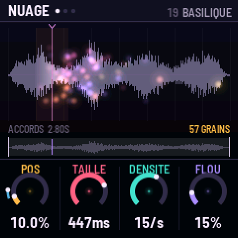
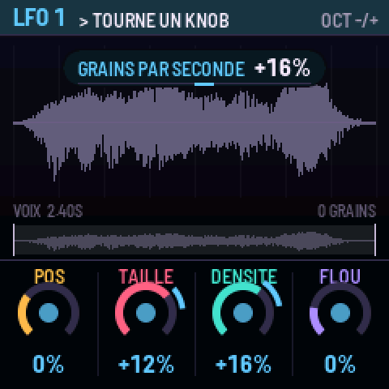
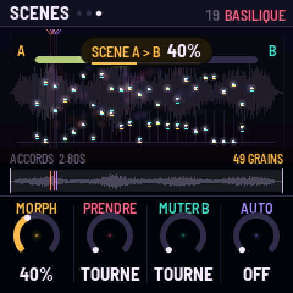
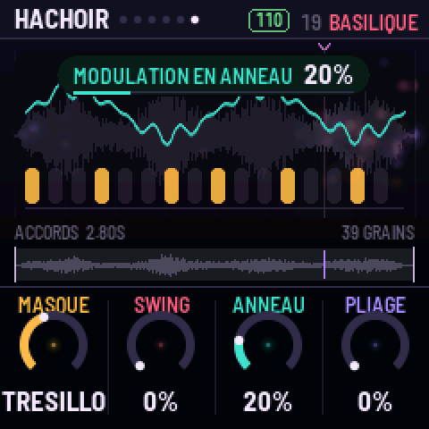
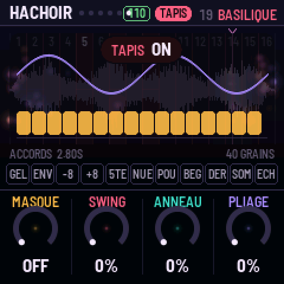
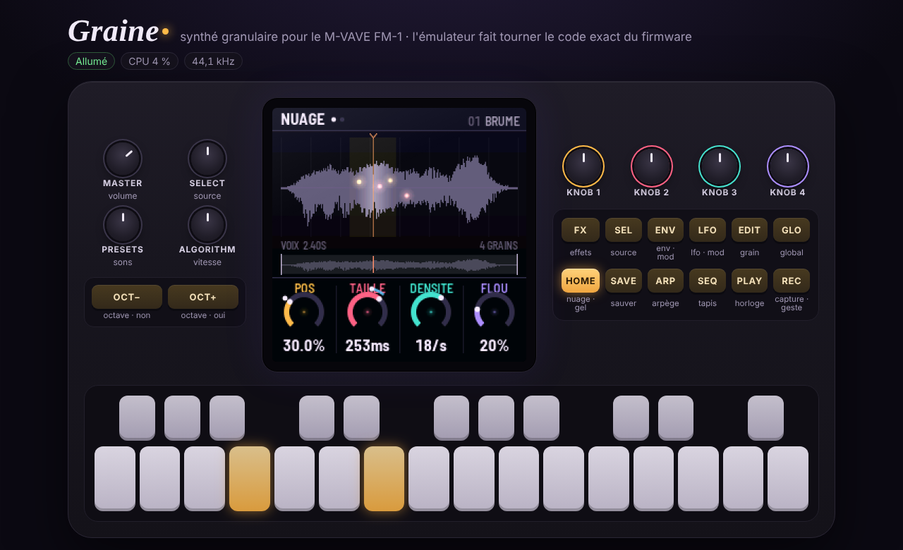

GRAINE : le manuel
GRAINE transforme le M-VAVE FM-1 en synthé granulaire. Treize sources (huit sons, cinq qui évoluent), ta propre capture et quatre emplacements pour tes sons sont lus par jusqu'à 128 grains répartis sur 6 voix, calculés par les deux cœurs du FM-1. L'écran montre ce que tu entends : chaque grain est une graine lumineuse posée là où il lit le son.

Installer
- Ouvre la page Installer du site dans Chrome ou Edge (elle passe par le Web MIDI).
- Branche le FM-1 avec un câble USB de données et suis la page : elle écrit GRAINE à la place du firmware d'origine. Pour revenir au firmware de M-VAVE, utilise leur outil de mise à jour.
- GRAINE démarre sur le son BRUME. Joue les touches.
Sans navigateur : python3 base/tools/fm1_install.py graine-X.Y.fwsc depuis le dépôt de GRAINE.
Le principe : trois gestes
- Tourner : quatre knobs, toujours les mêmes couleurs (ambre, rose, turquoise, lilas) sur toutes les pages. Le dessin au-dessus du nuage montre ce qu'ils font, dans leurs couleurs.
- Maintenir une source, tourner une destination : maintiens
LFOouENVet tourne un knob, il est modulé. MaintiensRECet tourne un knob, ton geste est enregistré et tourne en boucle sur l'horloge. - Jouer : le clavier en notes, ou en TAPIS (16 endroits du son et 11 pads de performance).

Le panneau
| Commande | Tap | Maintien / combinaison |
|---|---|---|
HOME | NUAGE, JEU, SCÈNES | maintenu : GEL (le balayage s'arrête) |
SEL | SOURCE, BALAYAGE | |
EDIT | GRAIN, TEXTURE, DRONE, CHAOS | |
ENV | AMPLI, ENV MOD | maintenu + knob : modulation par l'enveloppe (OCT−/+ : vélocité, pression, aléa, molette) |
LFO | LFO 1, LFO 2 | maintenu + knob : modulation par le LFO (OCT−/+ : LFO 1 ↔ LFO 2) |
FX | FILTRE, ÉCHO, ESPACE, HALO, MATIÈRE, HACHOIR | |
ARP | ARPÈGE, PLUIE | |
GLO | GLOBAL, HORLOGE, HASARD | |
SEQ | TAPIS on/off | maintenu : TAPIS le temps du maintien |
PLAY | l'horloge (gestes, arpège, hachoir, masque) | |
REC | capture de la sortie (devient la source CAPTURE) | maintenu + knob : geste ; REC+OCT− efface les gestes ; REC+SAVE garde la capture (U1–U4) |
SAVE | sauver le son (PRESETS choisit l'emplacement 1–24, OCT+ oui, OCT− non) | |
OCT− / OCT+ | octave −3…+3 | les deux : octave 0 |
SELECT | la source (les emplacements vides sont sautés) | |
PRESETS | les 24 sons (un son modifié demande un second cran) | |
ALGORITHM | vitesse de lecture, de ×−4 à ×4 ; 0 fige, ×1 = temps réel | |
KNOB 1–4 | les quatre réglages de la page |
Les pages
Chaque page a ses quatre knobs, et son dessin en surimpression sur le nuage.
| Bouton | Page | Knob 1 (ambre) | Knob 2 (rose) | Knob 3 (turquoise) | Knob 4 (lilas) |
|---|---|---|---|---|---|
| HOME | NUAGE | position | taille du grain (5 ms–2 s) | densité (0,5–150 grains/s, ou division) | flou de position |
| HOME | JEU | hauteur ±24 | essaim (écart de hauteur) | grains à l'envers | écart stéréo |
| HOME | SCÈNES | morph A → B | prendre B (à rebours : échange A et B) | muter B (dose de HASARD) | morph auto (2 s à 1 min) |
| SEL | SOURCE | source | début de fenêtre | longueur de fenêtre | accord fin |
| SEL | BALAYAGE | mode (boucle, aller-retour, une fois, ivre, sauts) | vitesse | départ à chaque note | note → position |
| EDIT | GRAIN | forme (gauss → hann → tukey → rect) | pente | quantification de l'essaim | rythme (régulier, aléatoire, synchro) |
| EDIT | TEXTURE | scintillement | éclat (grains à l'octave) | glisse dans le grain ±24 | lissage de position |
| EDIT | DRONE | étire les grains (×1–×8, jusqu'à 16 s) | chœur (voix désaccordées et écartées) | source B | mélange A → B (grain par grain) |
| EDIT | CHAOS | chaos (grains fous) | hache (bégaie, roll, frein, envol, mélange) | pas (1/4–1/32) | chance |
| ENV | AMPLI | attaque | déclin | tenue | relâche |
| ENV | ENV MOD | attaque | déclin | tenue | relâche |
| LFO | LFO 1 / 2 | vitesse | forme (sinus… hasard, dérive) | sync (libre, tempo, lent ÷20) | départ (libre, à la note) |
| FX | FILTRE | type (PB → bande → PH) | coupure | résonance | saturation |
| FX | ÉCHO | temps (1/32 à 1/4.) | réinjection (jusqu'à l'auto-oscillation) | teinte | dose |
| FX | ESPACE | taille | durée (jusqu'à infini) | amorti | dose |
| FX | HALO | shimmer | intervalle (octave, quinte, octave+quinte, octave basse) | résonateurs accordés | infini (l'espace figé) |
| FX | MATIÈRE | bits | rabot (sous-échantillonnage) | largeur stéréo | volume du son |
| FX | HACHOIR | masque rythmique (7 motifs de 16 pas) | swing | anneau | pliage |
| ARP | ARPÈGE | mode | pas | octaves | durée |
| ARP | PLUIE | pluie (notes qui tombent seules) | étendue (octaves) | durée des gouttes | tenue (touches qui restent) |
| GLO | GLOBAL | voix (1 = mono legato) | portamento | gamme | tonique |
| GLO | HORLOGE | tempo | vélocité | capture (une fois, boucle, seuil) | longueur des gestes |
| GLO | HASARD | lancer (chaque cran mute le son ; à rebours : annule) | dose | cible | langue FR/EN |
Les dessins
| !AMPLI : la courbe d'enveloppe | !LFO : la forme d'onde et sa valeur |
| !FILTRE : la réponse en fréquence | !HALO : shimmer et résonateurs |


Pour planer : DRONE, HALO, SCÈNES, PLUIE
- ÉTIRE allonge chaque grain jusqu'à 8 fois (16 s au plus) : les grains se chevauchent en une nappe continue. Avec la vitesse de lecture (
ALGORITHM) proche de 0, le son se fige en un accord qui respire. - CHŒUR désaccorde chaque voix un peu et la place ailleurs dans la stéréo.
- SOURCE B et MÉLANGE : une part des grains lit une deuxième source, au même endroit. Module MÉLANGE par un LFO lent et le son passe d'une matière à l'autre.
- SHIMMER renvoie l'espace transposé (une octave, une quinte, les deux, ou une octave plus bas) dans l'espace lui-même : le son monte sans fin. INFINI fige l'espace : ce qu'il contient tient, tu joues par-dessus.
- RÉSONATEURS : trois cordes accordées sur la note jouée, sa quinte et la tierce de la gamme (GLOBAL) font chanter n'importe quelle source dans la tonalité.
- SCÈNES : règle un son, tourne PRENDRE (il devient la scène B), change les knobs (c'est la scène A), puis MORPH passe de l'une à l'autre, tous les réglages à la fois. AUTO le fait tout seul, très lentement si tu veux. MUTER fabrique une scène B au hasard autour de la tienne.
- PLUIE fait tomber des notes de la gamme toutes seules : un générateur d'ambiance sans les mains. TENUE garde les touches enfoncées : un accord tenu, puis un second appui le relâche.
- LFO lent (SYNC = LENT) : des cycles de plusieurs minutes.

Pour piquer : CHAOS, HACHOIR
- CHAOS : de temps en temps, un grain n'en fait qu'à sa tête : à l'envers, une octave plus haut ou plus bas, réduit à un clic, ailleurs dans le son, glissant de deux octaves, ou absent.
- HACHE : à chaque pas de l'horloge (
PAS), selon la CHANCE, le son bégaie, roule (des répétitions de plus en plus serrées), freine comme une bande qui s'arrête ou s'envole d'une octave. MÉLANGE tire au sort.PLAYlance l'horloge interne ; sans elle, une horloge libre tourne quand même. - MASQUE : sept rythmes de 16 pas (croches, syncope, tresillo, galop, haché, pulsation, aléatoire) ouvrent et ferment le son, avec du SWING. L'écho et l'espace continuent derrière.
- ANNEAU module le son par une sinusoïde un peu à côté de la note : du métal. PLIAGE replie l'onde.

Le TAPIS
SEQ transforme le clavier. Les 16 touches blanches sont 16 endroits de la fenêtre : avec ALGORITHM à ×1 c'est un découpeur d'échantillon, à 0 un nuage figé à cet endroit. Les 11 touches noires sont des pads, actifs tant qu'on les tient : gel · envers · −1 octave · +1 octave · quinte · nuée (densité ×4) · poussière (grains ÷4) · bégaie · dérive · sombre · écho.

Les sources
Toutes synthétisées par tools/gen_sounds.py : aucun échantillon enregistré, aucun droit tiers.
| VOIX | un chœur qui glisse de voyelle en voyelle |
| VERRE, CORDE, SOUFFLE, TAMBOUR, ORGUE, PLUIE, SPECTRE | verre frotté, cordes pincées, souffle, peaux, orgue, gouttes, drone FM |
| ARPÈGE | un arpège qui traverse La m – Fa – Do – Sol, son filtre qui s'ouvre |
| BASSE | une ligne de basse qui change et grogne de plus en plus |
| ACCORDS | Ré m9 – Si♭ maj7 – Fa maj7 – Do 6sus qui se fondent l'un dans l'autre |
| NAPPE | les harmoniques de La 1 qui entrent une à une |
| SEQUENCE | seize pas jamais pareils : bips FM, bruit, toms, glitch |
| CAPTURE | ce que tu as capturé avec REC (en mémoire vive, 2,97 s) |
| U1–U4 | tes sons : captures gardées, ou sons importés (ci-dessous) |
Les cinq sources qui évoluent sont faites pour être parcourues lentement : ALGORITHM vers ×0,1, et l'arpège, la basse ou les accords avancent sur des dizaines de secondes.
Les sons d'usine
BRUME, CHORALE, VERRIÈRE, GIVRE, HARPE, ÉTIREMENT, SOUFFLE, MACHINE, GLITCH, ORGANUM, AVERSE, SPECTRE, TROU NOIR, POUSSIÈRE, ARPEGIO, RÉCOLTE, et sur les nouvelles sources et pages : MONTÉE (l'arpège qui monte dans le shimmer), GRAVE (la basse, filtre à l'enveloppe), BASILIQUE (les accords étirés en chœur dans un grand espace), AUBE (la nappe et ses résonateurs), ROUAGES (la séquence masquée et hachée), MIRAGE (accords et nappe mêlés par un LFO), ORAGE (chaos, pliage, hachoir) et SABLIER (l'arpège figé sous une pluie de notes). SAVE garde les tiens par-dessus, dans 24 emplacements.
Tes propres sons
Quatre emplacements, U1 à U4, gardent tes sons dans la mémoire du FM-1, même éteint. Trois façons de les remplir :
- Capturer :
RECenregistre ce que joue le FM-1 (CAPTURE),REC+SAVEle garde dans U1–U4. Avec la capture au SEUIL (HORLOGE), l'enregistrement attend le premier son. - La page Importer du site (Chrome ou Edge) : dépose n'importe quel fichier audio (WAV, MP3, OGG, FLAC, M4A…), écoute ce qui sera envoyé, choisis l'emplacement, Envoyer. Le son part par le câble USB.
- Sans navigateur, depuis un terminal, dans le dépôt de GRAINE :
``sh pip install mido python-rtmidi python3 tools/graine_import.py mon-son.wav --slot 1 python3 tools/graine_import.py --clear --slot 2 ``
Un emplacement garde 65 504 octets : 2,9 s en qualité 22 kHz, 4 s à 16 kHz, 5,9 s à 11 kHz, 8,1 s à 8 kHz. En mode auto, la meilleure qualité qui tient est choisie. Le silence du début est coupé, le son normalisé. Le son du FM-1 s'arrête quelques secondes pendant l'écriture. Un envoi interrompu laisse l'emplacement vide, jamais un demi-son. Le son importé devient la source jouée.
MIDI
Notes (vélocité), pitch bend ±2, molette (CC1, source de modulation), pression (canal et polyphonique), sustain (CC64), horloge et start/stop. CC 14–21 : les knobs de NUAGE et JEU ; CC 74 coupure, 71 résonance, 91 espace, 94 écho.
L'émulateur
Le même code, compilé en WebAssembly, joue dans le navigateur (page Émulateur du site) : tous les réglages, un clavier MIDI, et tes sons déposés dans U1–U4.

Sous le capot
- Deux cœurs : le second calcule la moitié des grains. S'il venait à défaillir, GRAINE continue sur un seul cœur avec 64 grains jusqu'à l'extinction, sans redémarrer.
- Si le calcul déborde, GRAINE retire des grains un instant, puis les rend peu à peu.
- Mémoire : les 13 sources (385 Ko) et le programme tiennent dans les 581 Ko du FM-1 ; la capture (128 Ko), l'écho, l'espace, le shimmer et les résonateurs dans sa mémoire vive.
- Code libre (MIT), bâti sur fm1-base (MPL-2.0) et felucca-bsp (Felucca, Leo Kuroshita, Hügelton Instruments).